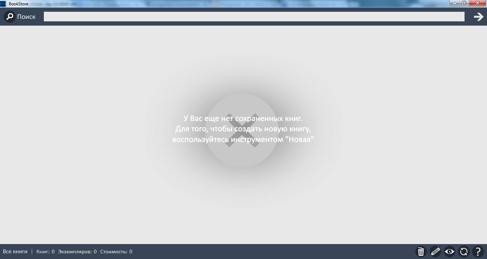
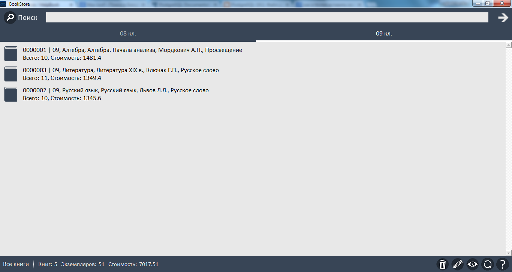
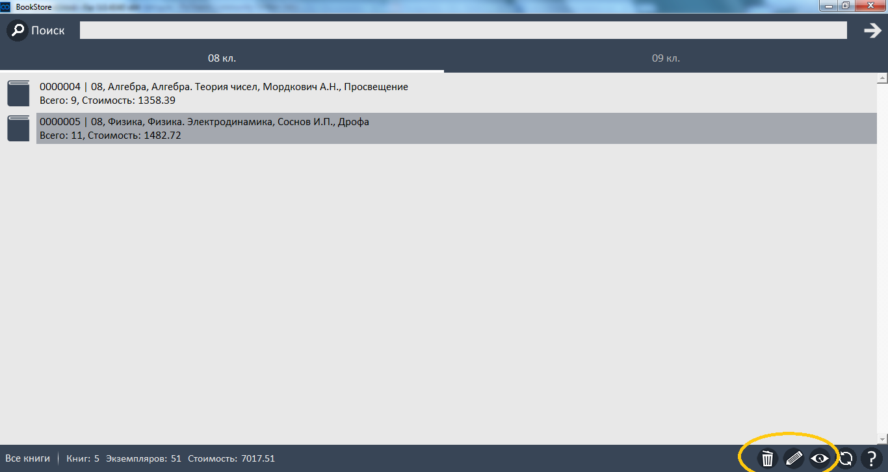
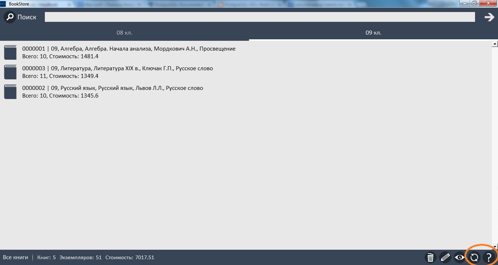
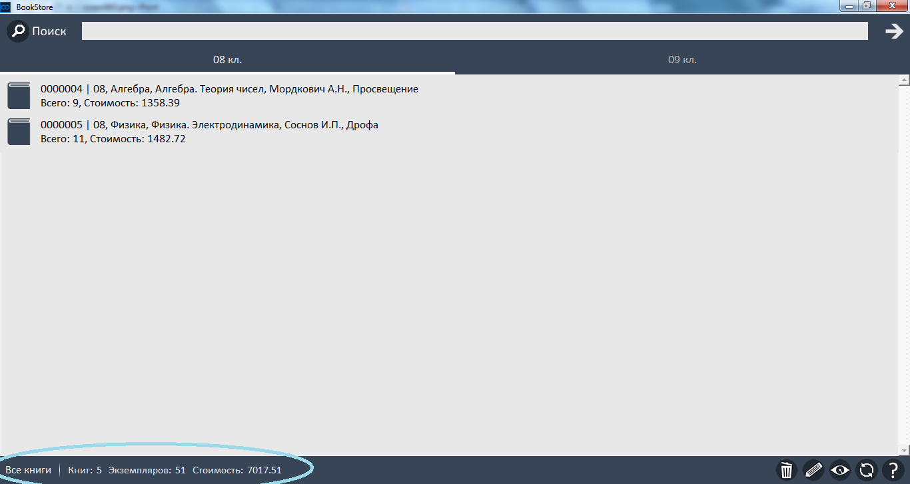

После перехода на вторую страницу Вы увидете следующее. На данной странице находятся все те книги, которые Вы занесли в базу данных BookStore.
При первом входе в BookStore Вам будет выводиться информация о том, что Вы еще не создали ни одной книги.

Но после создания Ваших первых книг в базе, на данной странице появится список книг, разделенный на вкладки по классам учебников, между которыми Вы можете переходить как между вкладками браузера.

Над каждой книгой в списке можно выполнять инструменты, изложенные в правом нижнем углу. Чтобы выполнить очередной инструмент над нужной Вам книгой, выделите нужную Вам книгу и нажмите на кнопку нужного Вам инструмента.
В данном примере все кнопки инструментов выделены желтым овалом.

Эти инструменты (слева направо):
Чуть правее от кнопок инструментов находятся еще две кнопки (в данном примере обозначены оранжевым овалом).

Самая левая кнопка из этой группы необходима для обновления списка книг (это необходимо в сетевом режиме, так пока Вы ничего не делаете, другие пользователи базы могут изменять данные).
Вторая кнопка из этой группы необходима для вызова справки, которую Вы сейчас читаете.
В самой верхней части окна находится поисковая строка и кнопка поиска. Таким образом Вы можете найти нужную (-ые) книгу, введя какую-то часть названия или других данных книги в эту поисковую строку и нажав кнопку поиска.
В левом нижнем крае находится строка статуса (в примере обозначена голубым овалом).

Здесь указывается, каким образом Вы сейчас просмотриваете книги ("Все книги" или "Поиск книг"), сколько сейчас всего просматриваемых книг, сколько экземпляров просматриваемых книг и сколько стоят все просматриваемые книги.